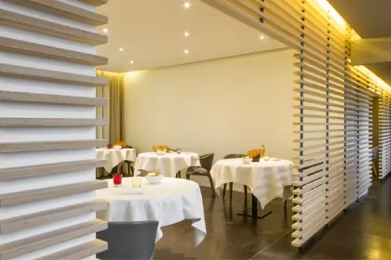

House pick

● 0 m · on-site
11 rooms
L'Air du Temps SETTING
Rue de la Croix Monet 2 · Liernu
Eleven rooms in two buildings — original farmstead block (rooms 1–5, garden views, external stairs) and a 2018 converted barn (6–11, internal staircase). Same gravel as the kitchen garden.[2][3]
From
€210dbl + bf
Rating
4.6/5 Tripadvisor
Sleep quality
5.0/5
Lift
Noneflag for mobility
Heads up. No A/C in rooftop rooms (summer pain), no 24h reception, restaurant is tasting-menu-only.[5]